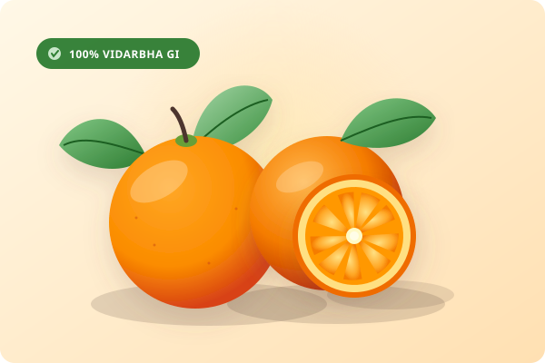

Farm-Direct Fair Trade
We work directly with smallholder farmers around Katol, ensuring fair compensation and encouraging organic orchard stewardship.
Nagpur is renowned across India as the Orange City. We bring you hand-picked, loose-jacket mandarin oranges and small-batch citrus delicacies crafted without artificial preservatives or food dyes.

The rich black cotton soil and distinct microclimate of the Vidarbha region give Nagpur mandarins their loose peel, aromatic oils, and a naturally balanced sweet-tart flavour profile.
Unlike commercial supermarket citrus, our oranges are left to ripen fully on the tree before harvesting, preserving their vitamin C potency and natural floral fragrance.
Ethical agriculture, pure ingredients, and sustainable packaging define every batch we produce.
We work directly with smallholder farmers around Katol, ensuring fair compensation and encouraging organic orchard stewardship.
Our cold-pressed juices and jaggery marmalades are prepared in artisanal batches of 50 units to preserve peak flavor and aroma.
We pack solely in reusable glass bottles and biodegradable unbleached kraft cartons to reduce single-use plastic waste.
Planning an event, corporate gifting hamper, or retail partnership?